Corporativo
Empresas y organizaciones.
- Soluciones e infraestructura
- Productividad
- Institucionalidad
- Tecnología aplicada al entorno empresarial
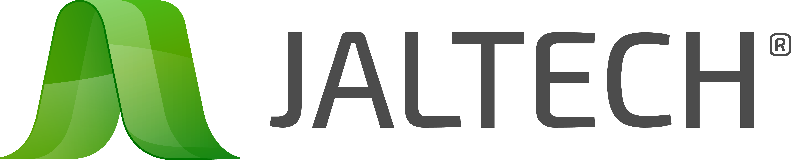
Logo Jaltech2026
Lineamientos visuales y recursos para desarrollar comunicaciones consistentes en Corporativo, Distribuidores, Partner POS y TecniGo.
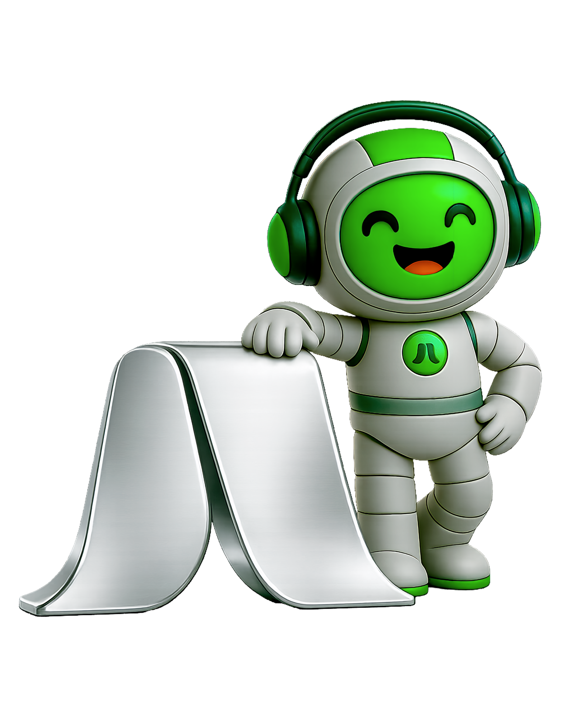
01 · Alcance
Corporativo, Distribuidores y Partner POS comparten la base visual Jaltech. TecniGo es una marca distinta dentro del ecosistema, con identidad independiente.

Empresas y organizaciones.

Logo JaltechDistribuidores, mayoristas, aliados comerciales y puntos de venta.
Desarrolladores de software POS, integradores y aliados tecnológicos.
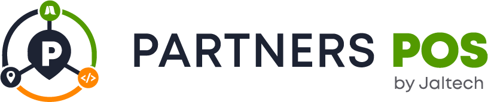
Logo Partner POSComunicación de productos tecnológicos dirigida al consumidor.
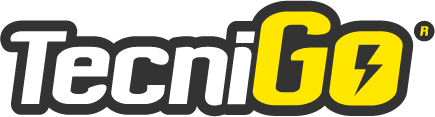
Marca independienteJaltech POS es una categoría de producto y solución, no una línea independiente de comunicación. Sus productos pueden aparecer en Corporativo, Distribuidores, Partner POS o TecniGo según el objetivo y el canal de la pieza.
02 · Identidad visual Jaltech
Criterios de las líneas Jaltech: fotografía y producto, color, fondos y composición, tipografía e iconografía. TecniGo tiene su propia sección.
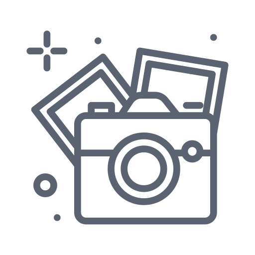
assets/images/estilo-de-vida.png
assets/images/productos-collage.png
Estilo de vida
Producto
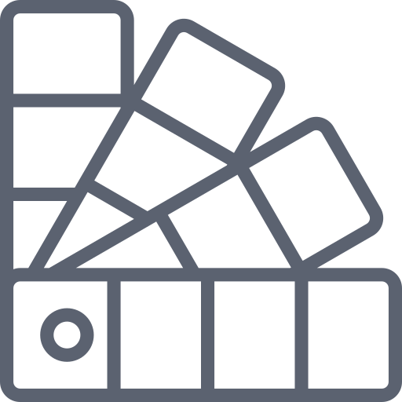
Corporativo
Distribuidores
Partner POS
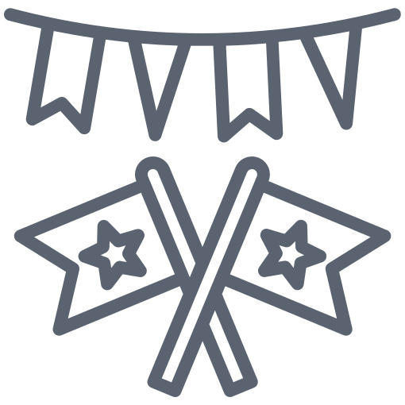
Fondo sólido. Color plano, máxima claridad.
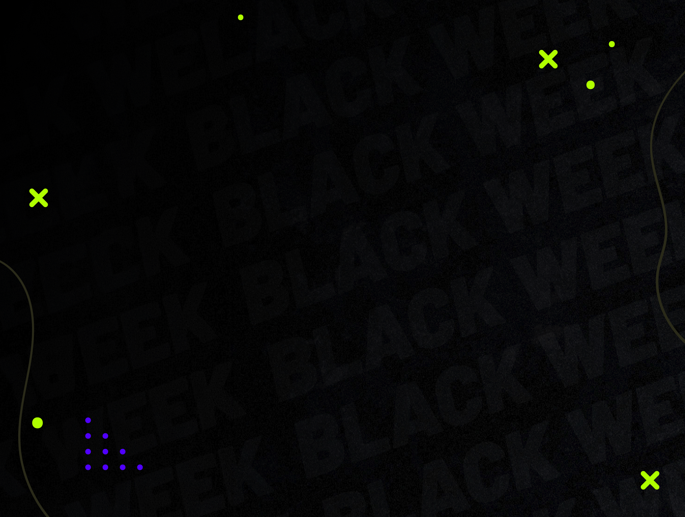
Textura sencilla. Sutil, sin protagonismo.
Degradado suave. Difuminado, sin cortes marcados.
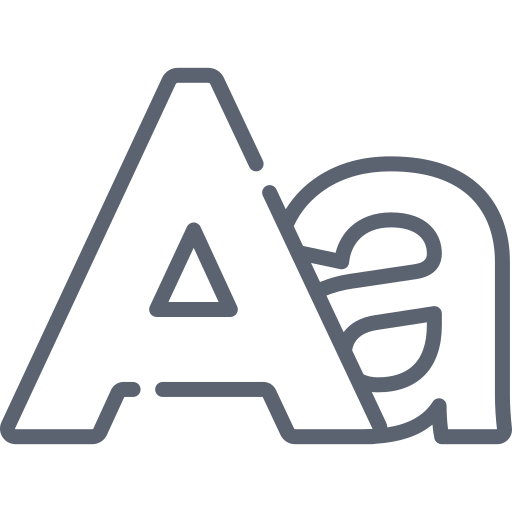
Títulos, subtítulos y destacados
Párrafos y textos corridos
Peso regular o light, interlineado amplio y jerarquía clara.
Corporativo
Distribuidores
Partner POS
TecniGo utiliza Oswald para títulos y destacados. Ir a la sección TecniGo
02.5
Nuestra iconografía sigue un estilo lineal, sencillo y flexible según la necesidad de cada pieza.
Sobre fondos claros
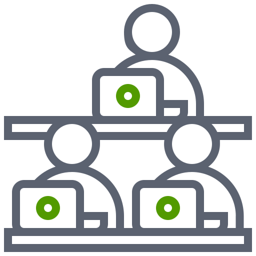
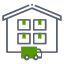
Sobre fondos de color
La iconografía no es un set cerrado: se desarrolla según la necesidad de cada pieza, manteniendo el mismo criterio visual.
03 · Corporativo
Piezas que permiten comprender visualmente el manejo de la comunicación corporativa.
Lineamientos
04 · Distribuidores
Piezas comerciales donde el producto, la promoción y el portafolio tienen mayor protagonismo.
Lineamientos
05 · Partner POS
Piezas dirigidas a desarrolladores e integradores que combinan software y hardware POS.
Partner POS apenas está iniciando su desarrollo visual. Los ejemplos corresponden a piezas existentes de Jaltech POS y funcionan únicamente como referencia del manejo gráfico de la categoría: el enfoque de Partner POS deberá adaptarse a desarrolladores, integradores y aliados de software, no a distribuidores.
Lineamientos
06 · Marca independiente
TecniGo es una marca distinta dentro del ecosistema: logo propio, colores propios, tipografía propia y mayor flexibilidad visual. Su comunicación se dirige al consumidor.
Paleta registrada en el Brand Hub del repositorio. Los valores están marcados como aproximados y pendientes de validación contra los archivos fuente.
Puede ser
Debe mantener
Piezas de producto tecnológico dirigidas al consumidor.
Lineamientos
TecniGo y Jaltech POS
TecniGo puede comunicar productos de Jaltech POS cuando formen parte de su oferta comercial. En esos casos, la comunicación debe presentarse como una alianza o distribución de productos Jaltech POS, sin dar a entender que TecniGo es Jaltech ni que Jaltech vende directamente al consumidor final.
07 · Aplicación
Corporativo y Distribuidores usan el logo Jaltech. Partner POS y TecniGo usan su propio logo.
Original · fondo claro
Blanco · fondo oscuro
Color · fondo oscuro
Original · fondo claro
Blanco · fondo oscuro
Color · fondo oscuro
Principal a color · fondo claro
Blanco · fondo oscuro
Variante oficial · fondo oscuro
El logo de Jaltech POS puede aparecer en materiales técnicos o de producto cuando corresponda, pero no reemplaza automáticamente el logo principal de la línea de comunicación.
07.2
Espacio mínimo libre alrededor de cada logo. Ningún elemento gráfico, texto o borde debe entrar en esa zona.
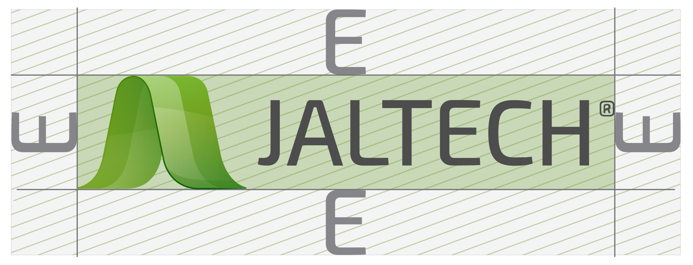
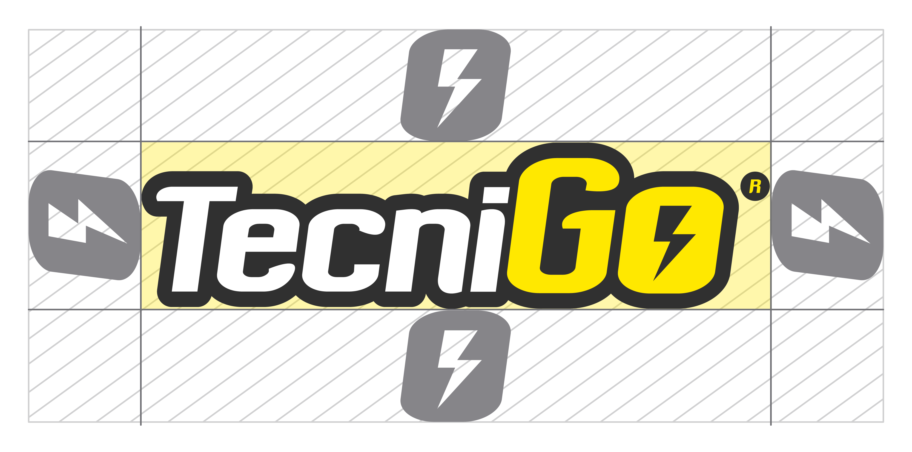
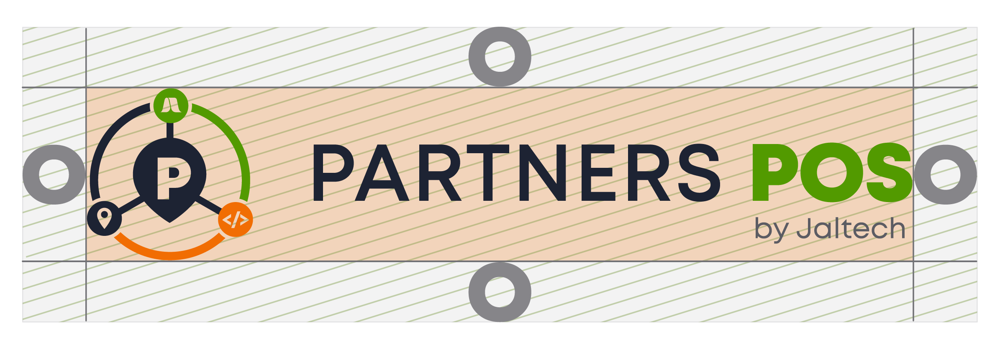
08 · Audiovisual
El logo va arriba a la izquierda, dentro del área segura. En horizontal usamos el logo completo; en vertical, el isotipo.
16:9 · logo Jaltech completo, arriba a la izquierda. Videos corporativos, YouTube, pantallas y presentaciones.
9:16 · isotipo Jaltech, arriba a la izquierda. Pauta, historias, reels y contenido móvil.
En piezas de Partner POS y TecniGo se sustituye el logo o el isotipo por el de su propia identidad, conservando la misma posición y área segura.
La versión del logo debe elegirse según el fondo del video. Sobre fondos claros se utiliza la versión correspondiente para fondo claro; sobre fondos oscuros o imágenes con poco contraste se utiliza la versión blanca o la variante que garantice mejor legibilidad.
09 · Biblioteca
Cada categoría abre un panel con los archivos reales: vista previa, nombre, formato, peso y descarga directa.
{kind=link}
{kind=link}
{kind=link}